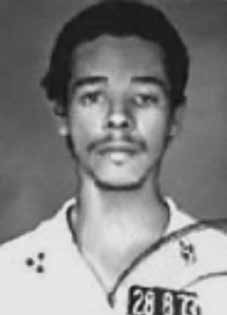

Almir
Custódio
de Lima
CIRCUNSTÂNCIAS DA MORTE
Almir Custódio de Lima foi morto no dia 27 de outubro de 1973, junto com Ranúsia Alves Rodrigues, Vitorino Alves Moitinho e Ramires Maranhão do Valle, todos militantes do PCBR, no episódio que ficou conhecido como “Chacina da Praça da Sentinela” ou “Chacina de Jacarepaguá”, em operação comandada por agentes do Destacamento de Operações de Informações – Centro de Operações de Defesa Interna (DOI/CODI) do I Exército.
O episódio foi narrado por Nilmário Miranda e Carlos Tibúrcio, no livro “Dos filhos deste solo”, nos seguintes termos: “Chovia na noite de 27 de outubro de 1973, um sábado. Alguns poucos casais escondiam-se da chuva junto do muro do Colégio de Jacarepaguá, no Rio. Por volta das 22h, um homem desceu de um Opala e avisou: ‘Afastem-se porque a barra vai pesar’. O repórter da Veja (7/11/73) localizou alguém que testemunhou o significado desse aviso: ‘Não ouvimos um gemido, só os tiros, o estrondo e a correria dos carros’. (…) Vindos de todas as ruas que levam à praça, oito ou nove carros foram chegando, cercando um fusca vermelho e despejando tiros. Depois jogaram uma bomba dentro do carro. No final, havia uma mulher morta com quatro tiros no rosto e peito e três homens carbonizados.”
Inicialmente, os jornais do dia 29 de outubro de 1973 noticiaram a morte de dois casais que teriam sido metralhados em Jacarepaguá, mas não forneceram a identificação das vítimas. Somente na edição de 17 de novembro de 1973 foi divulgada uma nota informando que quatro “terroristas” tinham sido mortos em tiroteio com as forças de segurança, na praça da Sentinela, em Jacarepaguá, no Rio de Janeiro. Em decorrência do tiroteio, o carro no qual os militantes se encontravam teria se incendiado, e os corpos de três militantes teriam sido carbonizados dentro do veículo.
Entre os militantes mortos foram identificados apenas Ranúsia e Almir. Os nomes de Vitorino e Ramires não foram informados na matéria, o que significa que a morte dos dois não foi oficialmente reconhecida à época. Com a abertura dos arquivos do Departamento de Ordem Política e Social (DOPS) do Rio de Janeiro e de São Paulo, na década de 1990, foram localizados documentos confidenciais de difusão interna do I Exército e do Ministério da Aeronáutica que identificavam os quatro militantes como vítimas do suposto tiroteio que teria resultado na carbonização do veículo.
No mesmo sentido, documento do Centro de Informações da Aeronáutica (CISA), de 28 de dezembro de 1973, registra que “Em 27 Out 73, em tiroteio com elementos dos órgãos de segurança da Guanabara, vieram a falecer Ranúsia Alves Rodrigues, Ramires Maranhão do Vale, Almir Custódio de Lima e Vitorino Alves Moitinho”. As informações contidas no documento permitem inferir que os órgãos de segurança conheciam a identidade de todos os militantes mortos no suposto conflito. Ademais, o texto do documento sugere que o aparato repressivo estava mobilizado com o intuito de minar a atuação do PCBR no país, na medida em que registra que a morte dos militantes “virá a acarretar a imobilização do PCBR, no sul do país, por um prolongado período de tempo”.
Ainda sobre a identificação dos militantes, as fotos da perícia de local mostram o veículo incendiado, com três corpos carbonizados dentro, pertencentes a Vitorino, Almir e Ramires, e o corpo de Ranúsia metralhado do lado de fora do carro. A Informação n° 2805 do Centro de Informações do Exército, de 1º de novembro de 1973, agrega outro elemento relevante para o esclarecimento do caso ao registrar que Ranúsia tinha sido presa no dia 27 de outubro e supostamente levada ao local em Jacarepaguá, onde haveria um encontro dos militantes do PCBR que, percebendo o cerco policial, teriam iniciado o tiroteio.
Mais recentemente, outro documento localizado pela Comissão Estadual da Memória e da Verdade Dom Helder Câmara (CEMVDHC) indicou que Ramires e Almir também tinham sido detidos antes de morrerem. Trata-se de análise produzida pelo Centro de Informações do Exército (CIE), no ano de 1974, sobre a situação operacional dos grupos que aderiram à luta armada no Brasil. No trecho dedicado ao PCBR consta que, no final de outubro de 1973, o DOI-CODI do I Exército vigiou permanentemente as atividades de Almir Custódio de Lima, o que possibilitou a identificação também de Ramires do Valle e Ranúsia Alves.
O relatório informa, ainda, que os três foram presos e submetidos a interrogatórios. Segundo o informe, após a prisão dos três militantes, foram recolhidas informações que apontavam a fragilidade do PCBR que, “na Guanabara, estaria reduzido praticamente aos três acima mencionados e mais Vitorino Alves Moutinho”. Além disso, a partir dos interrogatórios, o órgão teria tomado conhecimento de que, na noite do dia 27 de outubro, haveria um encontro entre militantes da Ação Libertadora Nacional (ALN) e Vitorino Alves, que estaria buscando “reestruturar o PCBR”. De acordo com o documento, na “cobertura do ponto acima mencionado ocorreu violento tiroteio, quando morreram Ramires, Almir, Ranúsia e Vitório (sic) Alves Moutinho – ‘Branco’, ‘Doido’, este último que entrara no ponto”.
A confirmação da prisão e do interrogatório de três dos militantes do PCBR mortos no episódio demonstra a falsidade da versão de tiroteio, que consiste em mais um exemplo das farsas montadas por agentes da repressão para encobrir ações ilegais.
Outros indícios contribuem para desconstruir a versão divulgada. Segundo relatos da vizinhança, reproduzidos em reportagem da revista Veja de novembro de 1973, cerca de oito carros participaram da operação, e as testemunhas não “ouviram nenhum gemido, só tiros, o estrondo e a correria dos carros”. Além disso, a reportagem informa que o comissário responsável pelas investigações tinha sido afastado na mesma semana do acidente, quando o caso foi passado a autoridades superiores. Não obstante, o comissário chegou a declarar sobre o episódio que “os criminosos são gente de alto nível, preparados para executar outros crimes tão perfeitos e perversos quanto este”.
Por fim, em depoimento prestado em 1996, o companheiro de militância de Ramires, Antônio Soares Filho, que reconheceu o corpo de Ranúsia e de Ramires, desmentiu que houvesse um encontro do PCBR na região de Jacarepaguá no dia 27 de outubro de 1973, o que reforça a hipótese de que a cena foi forjada pelos órgãos de segurança.
Os quatro militantes mortos foram enterrados sem identificação, como indigentes, no cemitério de Ricardo de Albuquerque, no Rio de Janeiro. Em 1979, seus restos mortais foram transferidos para o ossuário geral e, entre 1980 e 1981, para uma vala clandestina com diversas outras ossadas. Os restos mortais de Almir não foram, até hoje, localizados e identificados.
Almir Custódio de Lima was killed on October 27, 1973, along with Ranúsia Alves Rodrigues, Vitorino Alves Moitinho and Ramires Maranhão do Valle, all PCBR militants, in the episode that became known as “Chacina da Praça da Sentinela” or “Chacina de Jacarepaguá”, in an operation commanded by agents from the Information Operations Detachment – Internal Defense Operations Center (DOI/CODI) of the 1st Army.
The episode was narrated by Nilmário Miranda and Carlos Tibúrcio, in the book “Of children of this soil”, in the following terms: “It was raining on the night of October 27, 1973, a Saturday. A few couples were hiding from the rain next to the wall of the Colégio de Jacarepaguá, in Rio. Around 10 pm, a man got out of an Opala and warned: ‘Stay away because the bar will be heavy.’ The reporter from Veja (7/11/73) located someone who testified to the meaning of this warning: ‘We didn’t hear a moan, just the shots, the bang and the rush of cars’ (…) Coming from all the streets leading to the square, eight or nine cars arrived, surrounding a red Beetle and spraying bullets into the car.
Initially, the newspapers on October 29, 1973 reported the death of two couples who had been machine-gunned in Jacarepaguá, but did not provide the identification of the victims. Only in the November 17, 1973 edition was a note published informing that four “terrorists” had been killed in a shootout with security forces, in Sentinela square, in Jacarepaguá, Rio de Janeiro. As a result of the shooting, the car in which the militants were traveling caught fire, and the bodies of three militants were charred inside the vehicle.
Among the dead militants, only Ranúsia and Almir were identified. The names of Vitorino and Ramires were not given in the article, which means that their deaths were not officially recognized at the time. With the opening of the archives of the Department of Political and Social Order (DOPS) in Rio de Janeiro and São Paulo, in the 1990s, confidential documents were found that were circulated internally by the First Army and the Ministry of Aeronautics, which identified the four militants as victims of the alleged shooting that resulted in the charring of the vehicle.
In the same sense, a document from the Aeronautical Information Center (CISA), dated December 28, 1973, records that “On 27 Oct 73, in a shootout with members of the Guanabara security agencies, Ranúsia Alves Rodrigues, Ramires Maranhão do Vale, Almir Custódio de Lima and Vitorino Alves Moitinho died”. The information contained in the document allows us to infer that the security agencies knew the identity of all the militants killed in the alleged conflict. Furthermore, the text of the document suggests that the repressive apparatus was mobilized with the aim of undermining the PCBR's activities in the country, as it states that the death of the militants “will result in the immobilization of the PCBR, in the south of the country, for a prolonged period of time”.
Still on the identification of the militants, the photos from the local investigation show the vehicle on fire, with three charred bodies inside, belonging to Vitorino, Almir and Ramires, and Ranúsia's body machine-gunned outside the car. Information No. 2805 from the Army Information Center, dated November 1, 1973, adds another relevant element to clarify the case by recording that Ranúsia had been arrested on October 27 and supposedly taken to the location in Jacarepaguá, where there would be a meeting of PCBR militants who, noticing the police siege, would have started the shooting.
More recently, another document located by the State Commission for Memory and Truth Dom Helder Câmara (CEMVDHC) indicated that Ramires and Almir had also been detained before they died. This is an analysis produced by the Army Information Center (CIE), in 1974, on the operational situation of the groups that joined the armed struggle in Brazil. The section dedicated to the PCBR states that, at the end of October 1973, the DOI-CODI of the 1st Army permanently monitored the activities of Almir Custódio de Lima, which also made it possible to identify Ramires do Valle and Ranúsia Alves.
The report also states that the three were arrested and subjected to interrogations. According to the report, after the arrest of the three militants, information was collected that pointed out the fragility of the PCBR which, “in Guanabara, would be practically reduced to the three mentioned above plus Vitorino Alves Moutinho”. Furthermore, from the interrogations, the body would have learned that, on the night of October 27th, there would be a meeting between militants from Ação Libertadora Nacional (ALN) and Vitorino Alves, who was seeking to “restructure the PCBR”. According to the document, in the “coverage of the aforementioned point, a violent shootout occurred, when Ramires, Almir, Ranúsia and Vitório (sic) Alves Moutinho – ‘Branco’, ‘Doido’, the latter who had entered the point – died”.
The confirmation of the arrest and interrogation of three of the PCBR militants killed in the episode demonstrates the falsehood of the shooting version, which is yet another example of the hoaxes set up by repression agents to cover up illegal actions.
Other evidence contributes to deconstructing the published version. According to reports from the neighborhood, reproduced in a report in Veja magazine from November 1973, around eight cars participated in the operation, and the witnesses did not “hear any groans, just gunshots, the bang and the rush of cars”. Furthermore, the report states that the commissioner responsible for the investigations had been removed the same week as the accident, when the case was passed on to higher authorities. However, the commissioner went so far as to declare about the episode that “the criminals are high-level people, prepared to carry out other crimes as perfect and perverse as this one”.
Finally, in a statement given in 1996, Ramires' fellow activist, Antônio Soares Filho, who recognized the bodies of Ranúsia and Ramires, denied that there had been a PCBR meeting in the Jacarepaguá region on October 27, 1973, which reinforces the hypothesis that the scene was faked by the security agencies.
The four dead militants were buried without identification, as paupers, in the Ricardo de Albuquerque cemetery, in Rio de Janeiro. In 1979, his remains were transferred to the general ossuary and, between 1980 and 1981, to a clandestine grave with several other remains. Almir's remains have not, to this day, been located and identified.
Almir Custódio de Lima fue asesinado el 27 de octubre de 1973, junto con Ranúsia Alves Rodrigues, Vitorino Alves Moitinho y Ramires Maranhão do Valle, todos militantes del PCBR, en el episodio que pasó a ser conocido como “Chacina da Praça da Sentinela” o “Chacina de Jacarepaguá”, en una operación comandada por agentes del Destacamento de Operaciones de Información – Centro de Operaciones de Defensa Interna (DOI/CODI) de el 1er ejército.
El episodio fue narrado por Nilmário Miranda y Carlos Tibúrcio, en el libro “De los hijos de esta tierra”, en los siguientes términos: "Estaba lloviendo la noche del 27 de octubre de 1973, un sábado. Algunas parejas se escondían de la lluvia junto al muro del Colegio de Jacarepaguá, en Río. Alrededor de las 22, un hombre se bajó de un Opala y advirtió: 'Aléjense porque la barra estará pesada'. El reportero de Veja (11/7/73) localizó a alguien que testificó sobre el significado de esta advertencia: “No escuchamos un gemido, solo los disparos, los golpes y el ajetreo de los autos” (…) De todas las calles que conducían a la plaza llegaron ocho o nueve autos, rodeando un Escarabajo rojo y disparando contra el auto.
Inicialmente, los diarios del 29 de octubre de 1973 informaron de la muerte de dos parejas que habían sido ametralladas en Jacarepaguá, pero no proporcionaron la identificación de las víctimas. Recién en la edición del 17 de noviembre de 1973 se publicó una nota informando que cuatro “terroristas” habían sido asesinados en un tiroteo con las fuerzas de seguridad, en la plaza Sentinela, en Jacarepaguá, Río de Janeiro. Como resultado del tiroteo, el coche en el que viajaban los militantes se incendió y los cuerpos de tres militantes quedaron carbonizados en el interior del vehículo.
Entre los militantes muertos sólo fueron identificados Ranúsia y Almir. Los nombres de Vitorino y Ramires no aparecen en el artículo, lo que significa que sus muertes no fueron reconocidas oficialmente en ese momento. Con la apertura de los archivos del Departamento de Orden Político y Social (DOPS) en Río de Janeiro y São Paulo, en la década de 1990, se encontraron documentos confidenciales que circulaban internamente por el Primer Ejército y el Ministerio de Aeronáutica, que identificaban a los cuatro militantes como víctimas del presunto tiroteo que resultó en la carbonización del vehículo.
En el mismo sentido, un documento del Centro de Información Aeronáutica (CISA), de 28 de diciembre de 1973, registra que “El 27 de octubre del 73, en un tiroteo con miembros de los órganos de seguridad de Guanabara, murieron Ranúsia Alves Rodrigues, Ramires Maranhão do Vale, Almir Custódio de Lima y Vitorino Alves Moitinho”. La información contenida en el documento permite inferir que los organismos de seguridad conocían la identidad de todos los militantes muertos en el supuesto conflicto. Además, el texto del documento sugiere que el aparato represivo fue movilizado con el objetivo de socavar las actividades del PCBR en el país, ya que afirma que la muerte de los militantes “provocará la inmovilización del PCBR, en el sur del país, durante un período prolongado”.
Aún sobre la identificación de los militantes, las fotografías de la investigación local muestran el vehículo incendiado, con tres cuerpos calcinados en su interior, pertenecientes a Vitorino, Almir y Ramires, y el cuerpo de Ranúsia ametrallado en el exterior del vehículo. La información No. 2805 del Centro de Información del Ejército, de 1 de noviembre de 1973, agrega otro elemento relevante para esclarecer el caso al dejar constancia de que Ranúsia había sido detenido el 27 de octubre y supuestamente trasladado al lugar de Jacarepaguá, donde habría una reunión de militantes del PCBR que, al percatarse del cerco policial, habrían iniciado los disparos.
Más recientemente, otro documento localizado por la Comisión Estatal para la Memoria y la Verdad Dom Helder Câmara (CEMVDHC) indicaba que Ramires y Almir también habían sido detenidos antes de morir. Se trata de un análisis elaborado por el Centro de Información del Ejército (CIE), en 1974, sobre la situación operativa de los grupos que se sumaron a la lucha armada en Brasil. La sección dedicada a la PCBR afirma que, a finales de octubre de 1973, el DOI-CODI del 1.º Ejército monitoreaba permanentemente las actividades de Almir Custódio de Lima, lo que permitió también identificar a Ramires do Valle y Ranúsia Alves.
El informe también afirma que los tres fueron arrestados y sometidos a interrogatorios. Según el informe, tras la detención de los tres militantes, se recogieron informaciones que señalaban la fragilidad del PCBR que, “en Guanabara, quedaría prácticamente reducido a los tres antes mencionados más Vitorino Alves Moutinho”. Además, a través de los interrogatorios, el organismo habría sabido que, en la noche del 27 de octubre, habría una reunión entre militantes de la Ação Libertadora Nacional (ALN) y Vitorino Alves, que buscaba “reestructurar el PCBR”. Según el documento, en la “cobertura del punto mencionado, se produjo un violento tiroteo, cuando murieron Ramires, Almir, Ranúsia y Vitório (sic) Alves Moutinho – ‘Branco’, ‘Doido’, este último que había ingresado al punto”.
La confirmación de la detención e interrogatorio de tres de los militantes del PCBR asesinados en el episodio demuestra la falsedad de la versión del tiroteo, que es un ejemplo más de los engaños montados por los agentes de represión para encubrir acciones ilegales.
Otras evidencias contribuyen a deconstruir la versión publicada. Según informaciones del barrio, reproducidas en un reportaje de la revista Veja de noviembre de 1973, en la operación participaron unos ocho coches, y los testigos no oyeron “ningún gemido, sólo disparos, golpes y ruidos de coches”. Además, el informe afirma que el comisario responsable de las investigaciones fue destituido la misma semana del accidente, cuando el caso pasó a autoridades superiores. Sin embargo, el comisario llegó a declarar sobre el episodio que “los delincuentes son gente de alto nivel, dispuesta a cometer otros crímenes tan perfectos y perversos como éste”.
Finalmente, en una declaración dada en 1996, el compañero activista de Ramires, Antônio Soares Filho, que reconoció los cuerpos de Ranúsia y Ramires, negó que hubiera habido una reunión de la PCBR en la región de Jacarepaguá el 27 de octubre de 1973, lo que refuerza la hipótesis de que la escena fue simulada por los organismos de seguridad.
Los cuatro militantes muertos fueron enterrados sin identificación, como indigentes, en el cementerio Ricardo de Albuquerque, en Río de Janeiro. En 1979 sus restos fueron trasladados al osario general y, entre 1980 y 1981, a una fosa clandestina con varios restos más. Los restos de Almir, hasta el día de hoy, no han sido localizados ni identificados.